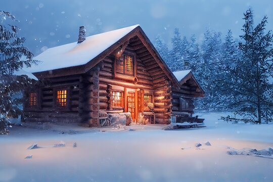

You choose to walk through the "dangerous" path. As you begin to walk for a few minutes, you notice that your environment has changed as a snow storm begins to cloud your vision. you continue to walk until suddendly you feel your legs becoming numb and unable to move anymore. You fall onto the ground and pass out.
A few hours later, you wake up and the snow storm has stopped. Though your vision is blurry, you see a light strucutre in the far distance. the closer you walk, you see it's a cabin the middle of the forest. Shall you go in?
(1) YES HURRY {Click here}
(2) NOPE FUCK THAT {Click here}